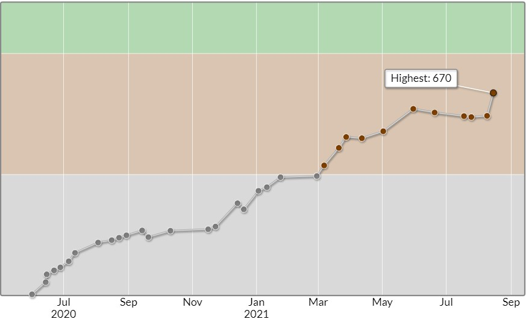
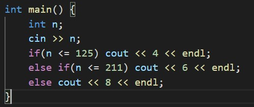
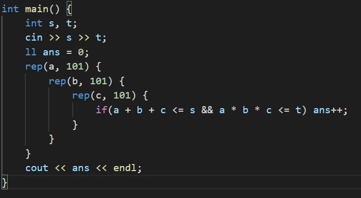
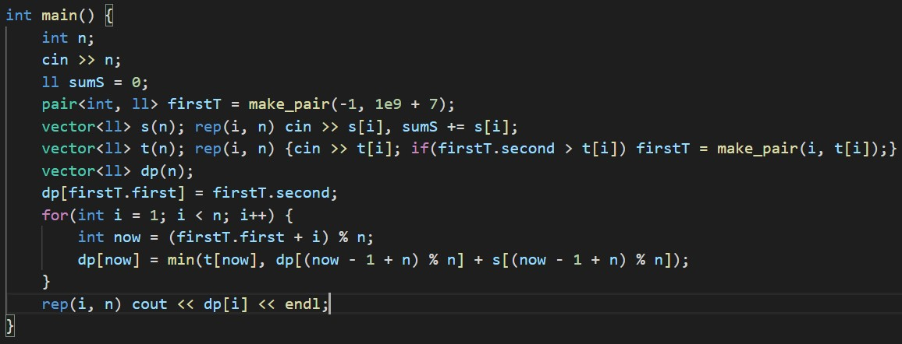
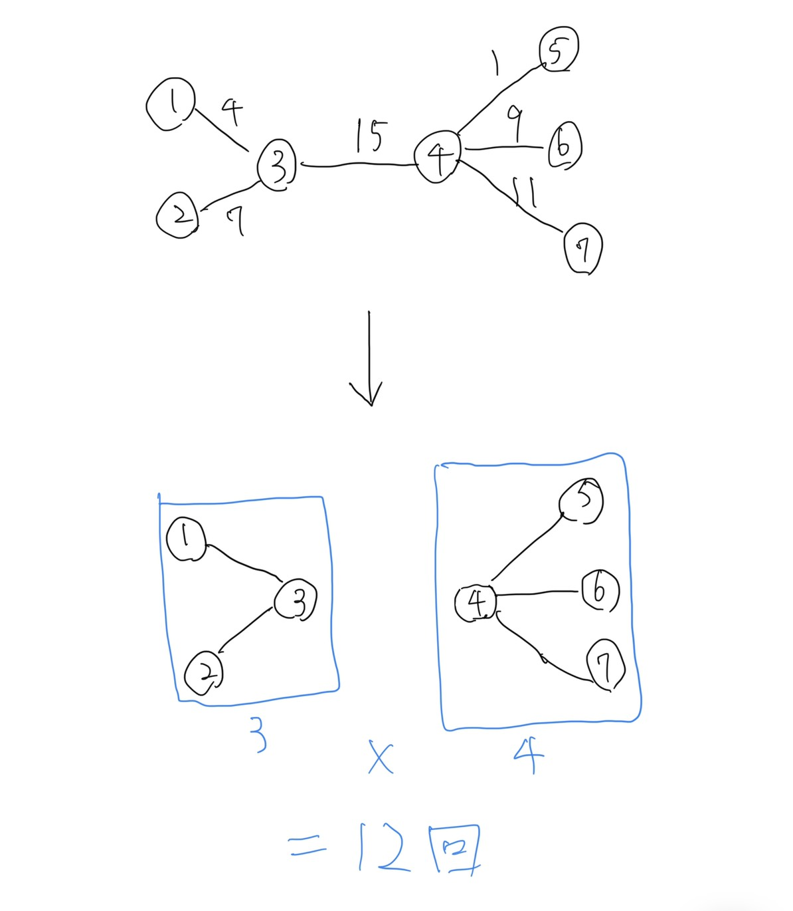
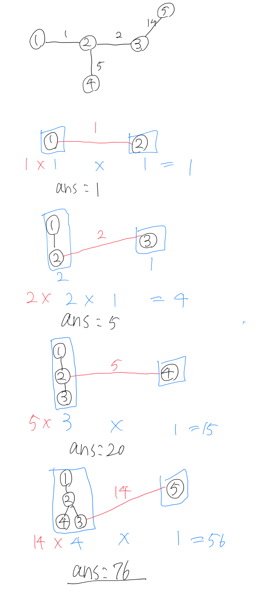
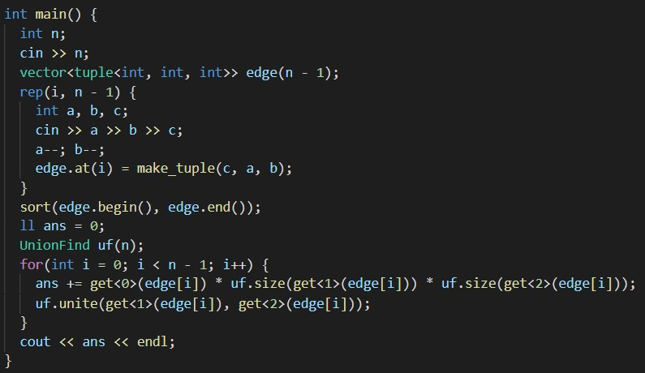

3回目の8問ABCでした。
今回も3完でしたが、C問題まで17分で解くことができたため、かなり良いパフォーマンスを出すことができました。(8問体制になっても解ける問題数が変わらない...)
レートは670(+76)で、久々にhighestを更新できました。(ウレシイ!)
A - New Generation ABC
条件分岐でOKです。
B - How many?
a + b + c <= s、s <= 100 より、a, b, cについて1~100まで(正確には98で大丈夫)の3重ループによる全探索でOKです。
C - Distribution
僕はDPで解きました。漸化式は以下の通りです。
dp[i + 1] = min(t[i + 1], dp[i] + s[i])
ただし厄介なのが、DPをどこから始めるかが入力によって異なるので、それを求める必要があります。
少し考えると、「DPをどこから始めるか」は、「どのすぬけ君が最初に宝石をもらうか」という事だとわかります。
そして、Tが最も小さいすぬけ君が一番最初に宝石を貰うのだとわかります。なぜなら、他のすぬけ君から宝石を貰うにしても、当然その宝石を高橋君から貰うのに時間(T)がかかっているため、結局直接高橋君から貰うのが一番最初になるからです。
(というより、「一番初めに高橋君から宝石を貰い、そこから宝石の受け渡しがスタートする」と考えた方がわかりやすいかもしれないです。)
範囲外アクセスしないように注意が必要です。
D - Sum of Maximum Weights
木構造問題ですが、実はUnion-Findを用いる問題です。(解けなかった...)
まず、一番重い辺について考えてみます。∫(i, j)が一番重い辺となるi, jの組み合わせの数、すなわち一番重い辺を通る頂点i, jの組み合わせの数は、「一番重い辺をなくしたときにできる2つの木のそれぞれの頂点数の積」になります。
下の図をみるとわかるかもしれないです。
この図で一番重い辺は3-4をつなぐ辺で、この辺をなくすと頂点数3, 4の2つの木ができます。
そして、頂点1から3-4の辺を渡る必要がある頂点は4, 5, 6, 7の4つです。頂点2, 3に関しても同じ事が言えるため、二つの木の頂点数の積だけこの辺が使われることがわかります。(コンテスト中はここまでしか考えられなかったです)
そして考察を進めると、重さが小さい辺からUnion-findを用いて上記の動作を行い、その辺の2頂点を結合していくのが解法だとわかります。なぜなら、通った辺のうち辺kが最大の重さになるためには、k以外の辺の重さはkの重さ以下でなくてはならないからです。
下図が入力例1の処理の流れです。重さ14の辺がなくなると一気に答えの数が減少するのは割と感覚と一致すると思います。
提出したコードです。
以上です。次はD問題まで解きたい...